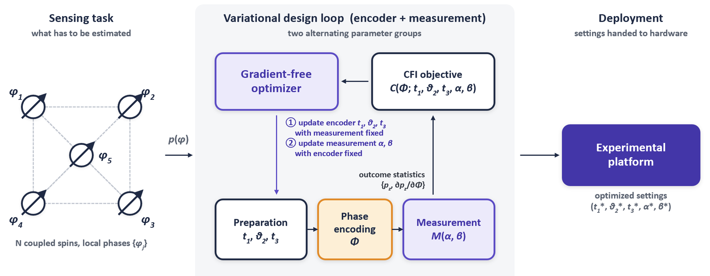

variational quantum sensing
Probes and measurements you optimize instead of derive
Textbook metrology hands you GHZ states and parity measurements. Real dipolar spin platforms hand you a fixed interaction and limited control. I set up the probe state, the encoding, and the readout as a parameterized circuit, then optimize the Fisher information directly with CMA-ES over PennyLane and JAX simulations. Learned probes approach entanglement-enhanced precision bounds and reach the Heisenberg limit for uniform phase encoding.
The multiparameter case is harder than it looks. The quantum Fisher information of a GHZ state is rank deficient, so joint magnetometry and gradiometry needs a different objective, and optimizing det(F) gets there.
